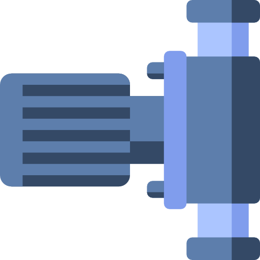

<!--
  Generated template for the PumpEastnorthpoolSettingPage page.

  See http://ionicframework.com/docs/components/#navigation for more info on
  Ionic pages and navigation.
-->
<ion-header>

  <ion-navbar color='primary'>
    <ion-title>{{name}}</ion-title>
    <ion-buttons end>
      <button ion-button icon-only (click)="presentShowModal()">
        <ion-icon name="alarm"></ion-icon>
      </button>
    </ion-buttons>
  </ion-navbar>

</ion-header>


<ion-content>
  <ion-list>
    <ion-item>
      <ion-label>{{nameE}}</ion-label>
      <ion-toggle [(ngModel)]="state" (ngModelChange)="setDeviceState(idE,nameE,state)" [disabled]="auto"></ion-toggle>
    </ion-item>
    <ion-item>
      <ion-label>{{nameN}}</ion-label>
      <ion-toggle [(ngModel)]="state1" (ngModelChange)="setDeviceState(idN,nameN,state1)" [disabled]="auto"></ion-toggle>
    </ion-item>
  </ion-list>
  <div text-center>
    
  </div>
</ion-content>